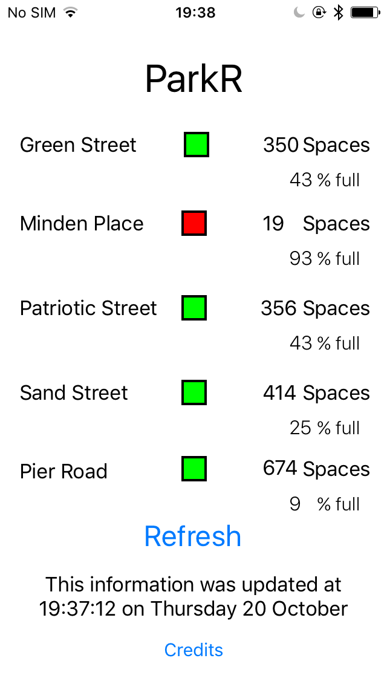
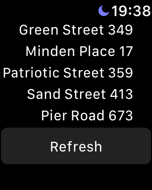
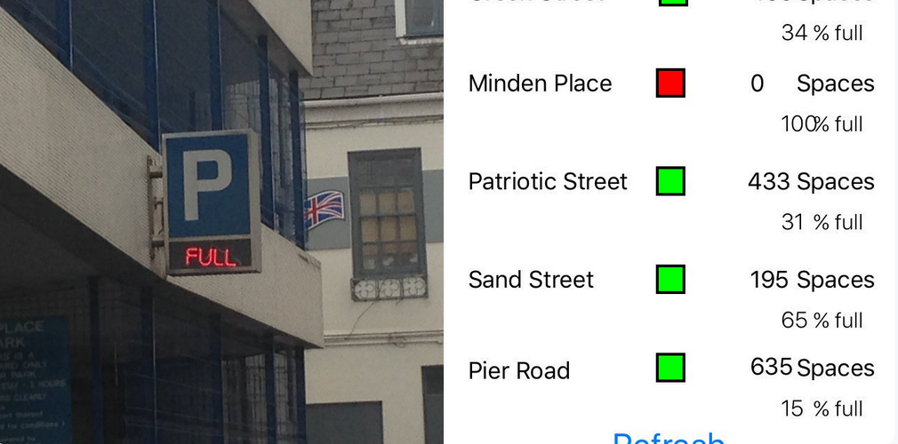

ParkR
Youth Hackathon 2016 2ND prize winner.
Click to view on the App Store
 ParkR runs on iOS and Apple Watch. It tells the user in a clean and simple UI the amount of spaces available in St.Helier's (Jersey's main urbanised area) 5 multi-storey car parks. The data updates once every two minutes. Screenshots display different figures as one of them wasn't refreshed!
Unfortunately, the Apple Watch version had to be removed from the App to upload it to the app store as it was causing errors, but it did work in simulators and when we plugged in a watch!
Below you can see a test version of the app (with a small UI issue) being 100% (pun intended) accurate!
Feedback for ParkR
Post-hackathonThey wrote the App using Apple’s own Xcode, a challenging task for anyone never mind two Year 8 students, all that saw the project were impressed at the audaciousness. Despite many last minute issues that threatened to cripple the project they came through and in less than 24hrs programmed, tested and succeeded in their goal. They have decided to continue with the project and recently added the Apple Watch App to the project with much pride felt when the Watch said Minden was full and their sign concurred. I think there are a great many of us who hope that this useful App will see the light of day, with the determination already shown by these two it’s more than likely that it will. read the full article here.
"Infuriating for drivers, it's enough to send anyone into steering wheel-thumping road rage. But not anymore - and all thanks to a pair of 12-year-olds, who have created their own app which tells motorists the occupancy levels of car parks in Jersey. It’s such a “phenomenal” idea, the States have given it their thumbs up and it will be available to use for all motorists. The car parking app was developed at the second all-night uHack Jersey, youth Hackathon" Baliwick Express, read the full article here.


Read my blog through the blog about the development of ParkR
We made the app using xCode and Swift 3. The iPhone version uses Alamofire to parse the JSON and the Watch version does it natively through Swift - we wanted to use different methods to learn more! The app then calculates the %Full of each car park and determines on how big the car park is, whether it is a good place to park.
I was the programmer of the the two-man team and my friend, Harry, was the UI designer and logo designer / person who went to get me some pizza!
I think the hardest bit of developing the app was either getting the scaling to work, which was extremely frustrating, or, determining whether the user had an internet connection so that we could notify them in a pop-up - this was a necesarry feauture to follow Apple's human interface guidelines.
We learnt a hard lesson about backing up which put us behind 10+ hours and also a LOT about iOS development.